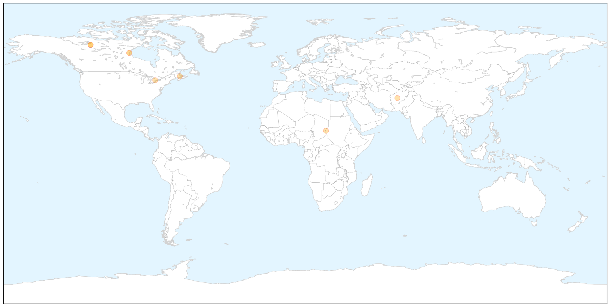

Toggle navigation
Early Warning
Return to Dashboard
Points of Interest
About the Project
Pertussis / Whooping Cough
Nov 13, 2015
Compare to:
-
Dengue Fever
Hemmorhagic Fever
Mold/Fungal Infection
Influenza
Meningitis
Middle East Respiratory Syndrome
Cholera
Hepatitis
Chikungunya
Yellow Fever
Bubonic Plague
West Nile Virus
Swine Flu
Ebola
Measles
Unknown
Mumps
30 Day Trends
Web: 1
alerts
, 0
warnings
Twitter: 0
alerts
, 0
warnings
Top Articles:
0.994
Malaria spreading in the west of Darfur, while whooping cough in the north of Darfur
0.978
Canada seeing outbreaks of pertussis. Is waning immunity from shots one reason?
0.975
News Talk Sports :: Canada seeing outbreaks of pertussis. Is waning immunity from shots one reason? :: National News
0.975
Canada seeing outbreaks of pertussis. Is waning immunity from shots one reason?
0.970
Canada seeing outbreaks of pertussis. Is waning immunity from shots one reason?
0.969
Whooping cough is back
0.876
Areas across Canada seeing outbreaks of whooping cough
0.627
Whooping cough on the rise
Top Tweets:
No tweets found for Nov 13, 2015
Web/News Articles
X
Tweets
X
Article Locations
X

Article Confidences
X